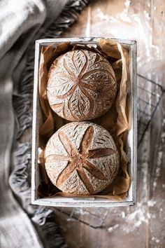
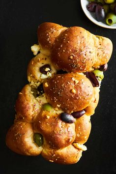

Our Breads

White Bread
Soft and fluffy white bread with a delicate crust, the perfect choice for sandwiches or breakfast toasts.
Learn MoreFarming Bread
Rustic farming bread with a rich grain flavor, crafted using traditional recipes.
Learn More
Loaf Bread
A classic loaf of bread with a dense texture and balanced taste — the perfect companion to any meal.
Learn More

Olive Bread
Infused with the aroma of Mediterranean olives, this bread is a great match for soups and appetizers.
Learn More
Whole-Grain Bread
Packed with fiber and nutrients, whole-grain bread is your path to healthy eating.
Learn MoreSourdough Bread
Artisanal bread lovingly made from natural ingredients for true gourmets.
Learn More